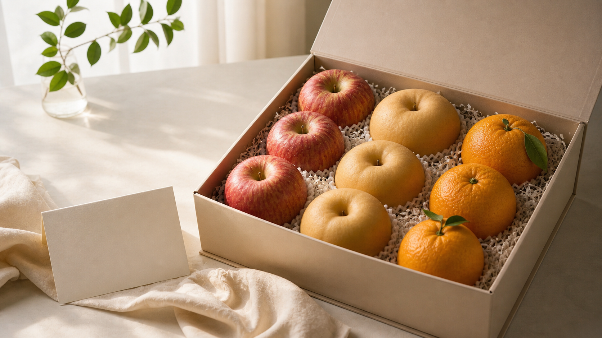

TSTC LAB 쨌 2026.05.28
怨쇱씪 ?좊Ъ? ???ㅽ뙣?좉퉴?
醫뗭? 怨쇱씪??蹂대깉?붾뜲?? 諛쏅뒗 ?щ엺?먭쾶??留욎? ?딆쓣 ???덉뒿?덈떎.

怨쇱씪 ?좊Ъ? 留덉쓬???닿린 醫뗭? 諛⑹떇?낅땲?? 蹂닿린 醫뗪퀬, ?④퍡 ?섎닃 ???덇퀬, 嫄닿컯???먮굦???덉뒿?덈떎. 洹몃옒???곕━???좊Ъ??怨쇱씪??怨좊? ???ш린? ?ъ옣, 媛寃⑸?瑜?癒쇱? 遊낅땲??
?섏?留??좊Ъ? 蹂대궡???щ엺??湲곗?留뚯쑝濡??꾩꽦?섏? ?딆뒿?덈떎. 諛쏅뒗 ?щ엺???쇱옄 ?щ뒗吏, ?꾩씠? ?④퍡 癒밸뒗吏, ?됱옣 蹂닿? 怨듦컙??異⑸텇?쒖?, ?μ씠 媛뺥븳 怨쇱씪???명븯寃?諛쏆븘?ㅼ씠?붿????곕씪 媛숈? ?좊Ъ??寃곌낵媛 ?щ씪吏묐땲??
?좊Ъ???ㅽ뙣??留덉쓬??遺議깊빐?쒓? ?꾨땲?? ?곹솴????臾쇱뿀湲??뚮Ц???앷만 ???덉뒿?덈떎.
?대뼡 吏묒뿉????⑸웾 ?좊Ъ ?명듃媛 遺?댁씠 ?⑸땲?? ?대뼡 ?щ엺?먭쾶???덈Т 吏꾪븳 ?μ씠 癒쇱? ?ㅺ??듬땲?? 蹂묐Ц???좊Ъ?대씪硫?癒밴린 ?ъ슫 ?뺣룄媛 ??以묒슂?????덇퀬, 遺紐⑤떂 ?좊Ъ?대씪硫?蹂닿?怨??먯쭏???명븿??癒쇱??????덉뒿?덈떎.
TSTC媛 ?좊Ъ ?먮젅?댁뀡怨??곌껐?섎뒗 ?댁쑀???ш린???덉뒿?덈떎. 怨쇱씪???깃툒蹂대떎 諛쏅뒗 ?щ엺??媛먭컖怨??앺솢??癒쇱? 蹂대㈃ ?ㅽ뙣 ?뺣쪧??以꾩씪 ???덉뒿?덈떎.
怨쇱씪肄붾뵒?ㅼ씠?곕뒗 ?좊Ъ??怨좊? ???쒓???鍮꾩떬 寃꺿앸낫???쒓???臾대━ ?녿뒗 寃꺿앹쓣 遊낅땲?? 遺?댁뒪?쎌? ?딆? ?? ?앷퉴吏 癒뱀쓣 ???덈뒗 ?? ?섎늻湲??ъ슫 ?뺥깭, 諛쏅뒗 ?щ엺???ㅼ젣濡??먯씠 媛?留뚰븳 ?앷컧????以묒슂?????덉뒿?덈떎.
醫뗭? 怨쇱씪怨?留욌뒗 怨쇱씪? ??媛숈? 留먯씠 ?꾨떃?덈떎. 怨쇱씪 ?좊Ъ????醫뗭? 寃쏀뿕???섎젮硫? ?ъ옣 ?꾩뿉 ?щ엺??癒쇱? 遊먯빞 ?⑸땲??